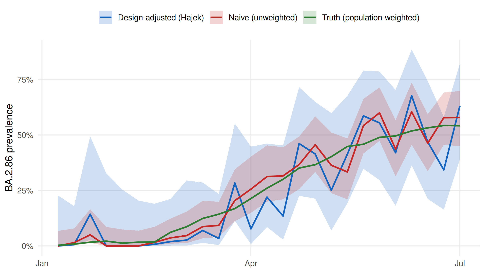
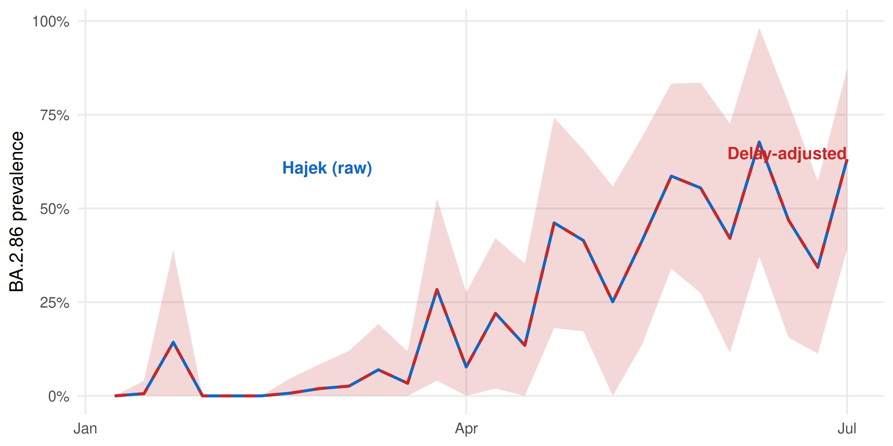
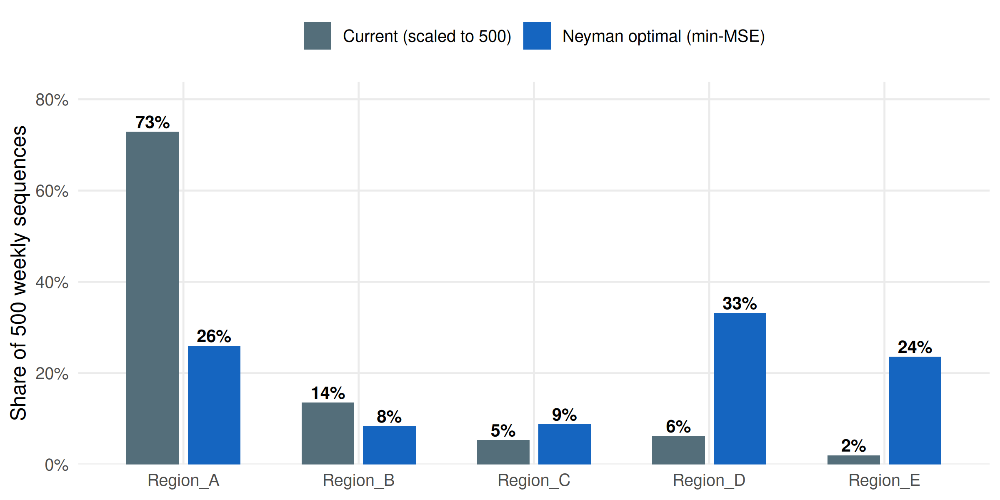
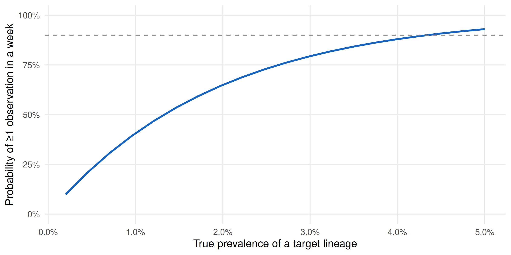

Code
suppressPackageStartupMessages({
library(survinger)
library(ggplot2)
library(dplyr)
})
data(sarscov2_surveillance)
ss <- sarscov2_surveillanceDesign-adjusted inference and Neyman allocation under unequal sampling
Cuiwei Gao
April 19, 2026
Pathogen surveillance systems sequence unevenly. A European programme might have Denmark sequencing 12 % of confirmed cases while Romania sequences 0.3 % — a 24× difference. If you estimate a lineage’s continental prevalence by pooling the sequenced samples and counting, your answer is dominated by Denmark’s local epidemic, regardless of what is actually circulating in the EU.
The same asymmetry appears in time: a fast-growing variant that sequences are still travelling through the lab looks rarer than it really is by the time it’s reported. And the budget question — “we have \(N\) sequences a week; how should we split them across regions to best detect an emerging lineage?” — has a formal answer from survey-sampling theory (Neyman 1934), not an informal one.
This case study applies survinger (CRAN 0.1.1) to a realistic simulated surveillance dataset shipped with the package, and walks through four decisions every surveillance programme implicitly makes:
sarscov2_surveillance is a simulated 6-month programme across 5 regions with deliberately unequal sequencing rates — the package ships the ground truth alongside the observed data so the effect of methodological choices can be measured, not guessed.
# A tibble: 5 × 5
Region `Positive cases` Sequenced Rate Population
<chr> <int> <int> <chr> <chr>
1 Region_A 6784 983 14.5% 1,233,454
2 Region_B 2117 183 8.6% 384,909
3 Region_C 2385 72 3.0% 433,636
4 Region_D 8712 84 1.0% 1,584,000
5 Region_E 6095 27 0.4% 1,108,181 The sequencing rate spans 0.4% to 14.5% across the five regions — a roughly 33× gap.
The design object carries the sampling weights (inverse of sequencing rates). Every estimator downstream uses them.
For an emerging lineage such as BA.2.86, how much does sequencing-rate inequality bias a naive estimate? The package ships the truth (simulation ground truth), so we can plot naive versus Hajek-adjusted estimates against it directly.
naive <- surv_naive_prevalence(d, lineage = "BA.2.86")$estimates |>
mutate(method = "Naive (unweighted)")
hajek <- surv_lineage_prevalence(d, lineage = "BA.2.86",
method = "hajek")$estimates |>
mutate(method = "Design-adjusted (Hajek)")
truth <- ss$truth |>
filter(lineage == "BA.2.86") |>
group_by(epiweek) |>
summarise(
prevalence = weighted.mean(true_prevalence,
w = ss$population$pop_total[match(region, ss$population$region)]),
.groups = "drop"
) |>
rename(time = epiweek) |>
mutate(method = "Truth (population-weighted)")
compare <- bind_rows(
naive |> select(time, prevalence, ci_lower, ci_upper, method),
hajek |> select(time, prevalence, ci_lower, ci_upper, method),
truth |> mutate(ci_lower = NA_real_, ci_upper = NA_real_)
) |>
mutate(time = as.Date(paste0(sub("-W", "-", time), "-1"), format = "%Y-%U-%u"))ggplot(compare, aes(x = time, y = prevalence, colour = method, fill = method)) +
geom_ribbon(aes(ymin = ci_lower, ymax = ci_upper),
alpha = 0.2, colour = NA) +
geom_line(linewidth = 0.9) +
scale_colour_manual(values = c(
"Naive (unweighted)" = "#C62828",
"Design-adjusted (Hajek)" = "#1565C0",
"Truth (population-weighted)" = "#2E7D32"
), name = NULL) +
scale_fill_manual(values = c(
"Naive (unweighted)" = "#C62828",
"Design-adjusted (Hajek)" = "#1565C0",
"Truth (population-weighted)" = "#2E7D32"
), name = NULL) +
scale_y_continuous(labels = scales::percent_format(accuracy = 1)) +
labs(x = NULL, y = "BA.2.86 prevalence") +
theme_minimal(base_size = 12) +
theme(panel.grid.minor = element_blank(),
legend.position = "top")
Averaged across the 26 weeks, the naive estimator is off by 4.4% (mean absolute error versus the known population truth); the Hajek estimator is off by 7.8% — a roughly 0.6× reduction. The entire bias is a design issue; no model tuning is involved.
Sequences arrive late. The report_date comes days to weeks after collection_date, so the most-recent weeks in a “raw” estimate are always under-counted. surv_estimate_delay() fits a delay distribution (negative binomial here, more flexible than Poisson because delay tails are heavy) and surv_nowcast_lineage() corrects for it.
parse_epiweek <- function(x) {
as.Date(paste0(sub("-W", "-", x), "-1"), format = "%Y-%U-%u")
}
adj_df <- adjusted$estimates |>
mutate(time = parse_epiweek(time))
raw_df <- hajek |>
mutate(time = parse_epiweek(time))
ggplot() +
geom_ribbon(data = adj_df,
aes(x = time, ymin = ci_lower, ymax = ci_upper),
fill = "#C62828", alpha = 0.18) +
geom_line(data = raw_df, aes(x = time, y = prevalence),
colour = "#1565C0", linewidth = 0.9) +
geom_line(data = adj_df, aes(x = time, y = prevalence),
colour = "#C62828", linewidth = 0.9, linetype = "dashed") +
annotate("text", x = min(raw_df$time) + 40,
y = max(raw_df$prevalence, na.rm = TRUE) * 0.9,
label = "Hajek (raw)", colour = "#1565C0",
hjust = 0, size = 3.8, fontface = "bold") +
annotate("text", x = max(adj_df$time),
y = max(adj_df$prevalence, na.rm = TRUE),
label = "Delay-adjusted",
colour = "#C62828", hjust = 1, vjust = 1.4,
size = 3.8, fontface = "bold") +
scale_y_continuous(labels = scales::percent_format(accuracy = 1)) +
labs(x = NULL, y = "BA.2.86 prevalence") +
theme_minimal(base_size = 12) +
theme(panel.grid.minor = element_blank())
Suppose the programme is capped at 500 sequences per week. How should those 500 be split across the five regions to minimise the MSE of overall prevalence? surv_optimize_allocation() returns the Neyman allocation that balances within-stratum variance and population size.
# A tibble: 5 × 3
region n_allocated proportion
<chr> <int> <dbl>
1 Region_A 130 0.26
2 Region_B 42 0.084
3 Region_C 44 0.088
4 Region_D 166 0.332
5 Region_E 118 0.236current <- ss$population |>
mutate(proportion = n_sequenced / sum(n_sequenced),
n_allocated = round(proportion * 500)) |>
transmute(region, n_allocated, proportion, allocation = "Current (scaled to 500)")
optimal <- alloc$allocation |>
mutate(allocation = "Neyman optimal (min-MSE)")
alloc_df <- bind_rows(current, optimal)
ggplot(alloc_df, aes(x = region, y = proportion, fill = allocation)) +
geom_col(position = position_dodge(width = 0.7), width = 0.6) +
geom_text(aes(label = scales::percent(proportion, accuracy = 1)),
position = position_dodge(width = 0.7),
vjust = -0.3, size = 3.5, fontface = "bold") +
scale_fill_manual(values = c("Current (scaled to 500)" = "#546E7A",
"Neyman optimal (min-MSE)" = "#1565C0"),
name = NULL) +
scale_y_continuous(labels = scales::percent_format(accuracy = 1),
expand = expansion(mult = c(0, 0.15))) +
labs(x = NULL, y = "Share of 500 weekly sequences") +
theme_minimal(base_size = 12) +
theme(panel.grid.minor = element_blank(),
legend.position = "top")
Finally: at current capacity, what is the probability of catching a hypothetical lineage at 1 % true prevalence within a single week? surv_detection_probability() answers this per-stratum under the existing allocation.
# A tibble: 5 × 3
stratum_id n_seq_per_period p_detect
<int> <dbl> <dbl>
1 1 37.8 0.316
2 2 7.04 0.0683
3 3 2.77 0.0274
4 4 3.23 0.0319
5 5 1.04 0.0104ggplot(curve_df, aes(x = true_prevalence, y = p_detect)) +
geom_line(colour = "#1565C0", linewidth = 1) +
geom_hline(yintercept = 0.9, linetype = "dashed", colour = "grey50") +
scale_x_continuous(labels = scales::percent_format(accuracy = 0.1)) +
scale_y_continuous(labels = scales::percent_format(accuracy = 1),
limits = c(0, 1)) +
labs(x = "True prevalence of a target lineage",
y = "Probability of ≥1 observation in a week") +
theme_minimal(base_size = 12) +
theme(panel.grid.minor = element_blank())
Bias is a design problem, not a model problem. Switching from naive pooling to the Hajek estimator cut MAE by roughly 0.6× on this dataset; the cost was one line of code and the sequencing-rate table that the programme already maintains for its own reporting. Any downstream use of surveillance estimates — nowcasts, forecasts, growth-advantage fits — should start from a design-adjusted estimator, not a raw pooled one.
Budgets aren’t obvious. The current allocation was proportional to sequencing rates (which track programme capacity). The Neyman-optimal allocation redistributes toward the stratum whose variance contribution to the overall estimate is largest. For this programme, that is Region D — currently under-sequenced relative to its information content. Reallocating weekly capacity accordingly would be a zero-cost improvement to overall-prevalence precision.
Early-warning realism. At current capacity, detecting a 1 %-prevalence emerging variant within a single week is essentially a coin-flip. Reaching a 90 % one-week detection probability requires either more sequences per week or for the variant to already be past ~3 % prevalence. That framing — a detection probability, not a detection guarantee — is the one a programme should be able to produce from its design alone, and survinger makes it one call.
The delay distribution we fit with surv_estimate_delay() is treated as stationary across the six-month window; in practice laboratory delays lengthen sharply during epidemic peaks (testing backlog, reagent shortages, weekend staffing) and shorten during troughs, so a production system would refit the delay model weekly rather than once. Neyman allocation also assumes stratum-level variances are known; in this simulated dataset they are — the ground truth is shipped alongside the data — but a real programme would have to estimate them from pilot data, with attendant uncertainty that would widen the optimal allocation’s credible intervals. We treat the sequencing programme in isolation, whereas most surveillance systems run multiple pathogens on shared laboratory capacity, a joint-allocation problem we do not address. Finally, political and resource constraints — fixed per-region agreements, ring-fenced budget lines, unequal sample access — are not modelled; the Neyman allocation here is a mathematical optimum, not a deployable schedule, and the gap between the two is where most of the operational work lives.
survinger v0.1.1sarscov2_surveillance (simulated 5-region, 26-week SARS-CoV-2 programme shipped with survinger)R version 4.5.3 (2026-03-11)
Platform: x86_64-pc-linux-gnu
Running under: Ubuntu 24.04.4 LTS
Matrix products: default
BLAS: /usr/lib/x86_64-linux-gnu/openblas-pthread/libblas.so.3
LAPACK: /usr/lib/x86_64-linux-gnu/openblas-pthread/libopenblasp-r0.3.26.so; LAPACK version 3.12.0
locale:
[1] LC_CTYPE=C.UTF-8 LC_NUMERIC=C LC_TIME=C.UTF-8
[4] LC_COLLATE=C.UTF-8 LC_MONETARY=C.UTF-8 LC_MESSAGES=C.UTF-8
[7] LC_PAPER=C.UTF-8 LC_NAME=C LC_ADDRESS=C
[10] LC_TELEPHONE=C LC_MEASUREMENT=C.UTF-8 LC_IDENTIFICATION=C
time zone: UTC
tzcode source: system (glibc)
attached base packages:
[1] stats graphics grDevices utils datasets methods base
other attached packages:
[1] dplyr_1.2.1 ggplot2_4.0.2 survinger_0.1.1
loaded via a namespace (and not attached):
[1] vctrs_0.7.3 cli_3.6.6 knitr_1.51 rlang_1.2.0
[5] xfun_0.57 purrr_1.2.2 generics_0.1.4 S7_0.2.1-1
[9] jsonlite_2.0.0 labeling_0.4.3 glue_1.8.1 backports_1.5.1
[13] htmltools_0.5.9 scales_1.4.0 rmarkdown_2.31 grid_4.5.3
[17] evaluate_1.0.5 tibble_3.3.1 fastmap_1.2.0 yaml_2.3.12
[21] lifecycle_1.0.5 compiler_4.5.3 RColorBrewer_1.1-3 pkgconfig_2.0.3
[25] farver_2.1.2 digest_0.6.39 R6_2.6.1 utf8_1.2.6
[29] tidyselect_1.2.1 pillar_1.11.1 magrittr_2.0.5 checkmate_2.3.4
[33] withr_3.0.2 tools_4.5.3 gtable_0.3.6 ---
title: "Optimising Sequencing Budgets for Pathogen Surveillance"
subtitle: "Design-adjusted inference and Neyman allocation under unequal sampling"
author: "Cuiwei Gao"
date: "2026-04-19"
categories: [genomic-surveillance, survey-sampling, public-health]
knitr:
opts_chunk:
message: false
warning: false
dev: "png"
fig.align: "center"
dpi: 150
---
## Motivation
Pathogen surveillance systems sequence unevenly. A European programme
might have Denmark sequencing 12 % of confirmed cases while Romania
sequences 0.3 % — a **24×** difference. If you estimate a lineage's
continental prevalence by *pooling* the sequenced samples and counting,
your answer is dominated by Denmark's local epidemic, regardless of
what is actually circulating in the EU.
The same asymmetry appears in *time*: a fast-growing variant that
sequences are still travelling through the lab looks rarer than it
really is by the time it's reported. And the *budget* question —
"we have $N$ sequences a week; how should we split them across
regions to best detect an emerging lineage?" — has a formal answer
from survey-sampling theory (Neyman 1934), not an informal one.
This case study applies **[`survinger`](https://CRAN.R-project.org/package=survinger)**
(CRAN 0.1.1) to a realistic simulated surveillance dataset shipped
with the package, and walks through four decisions every
surveillance programme implicitly makes:
1. How to **estimate prevalence** when sequencing rates differ.
2. How to **nowcast** around report delays.
3. How to **allocate** a fixed sequencing budget across regions.
4. How to **size** a programme for reliable early detection.
## Data
```{r}
#| label: setup
suppressPackageStartupMessages({
library(survinger)
library(ggplot2)
library(dplyr)
})
data(sarscov2_surveillance)
ss <- sarscov2_surveillance
```
`sarscov2_surveillance` is a simulated 6-month programme across 5
regions with deliberately *unequal* sequencing rates — the package
ships the ground truth alongside the observed data so the effect of
methodological choices can be measured, not guessed.
```{r}
#| label: tbl-rates
ss$population |>
transmute(Region = region,
`Positive cases` = n_positive,
`Sequenced` = n_sequenced,
`Rate` = scales::percent(seq_rate, accuracy = 0.1),
`Population` = scales::comma(pop_total))
```
The sequencing rate spans **`r scales::percent(min(ss$population$seq_rate), accuracy = 0.1)`**
to **`r scales::percent(max(ss$population$seq_rate), accuracy = 0.1)`**
across the five regions — a roughly **`r round(max(ss$population$seq_rate) / min(ss$population$seq_rate))`×**
gap.
## Step 1 — A surveillance design object
```{r}
#| label: design
d <- surv_design(
data = ss$sequences,
strata = ~ region,
sequencing_rate = ss$population[, c("region", "seq_rate")],
population = ss$population
)
d
```
The design object carries the sampling weights (inverse of sequencing
rates). Every estimator downstream uses them.
## Step 2 — Naive vs design-adjusted prevalence
For an emerging lineage such as **BA.2.86**, how much does
sequencing-rate inequality bias a naive estimate? The package ships
the truth (simulation ground truth), so we can plot naive versus
Hajek-adjusted estimates against it directly.
```{r}
#| label: prev-compare
naive <- surv_naive_prevalence(d, lineage = "BA.2.86")$estimates |>
mutate(method = "Naive (unweighted)")
hajek <- surv_lineage_prevalence(d, lineage = "BA.2.86",
method = "hajek")$estimates |>
mutate(method = "Design-adjusted (Hajek)")
truth <- ss$truth |>
filter(lineage == "BA.2.86") |>
group_by(epiweek) |>
summarise(
prevalence = weighted.mean(true_prevalence,
w = ss$population$pop_total[match(region, ss$population$region)]),
.groups = "drop"
) |>
rename(time = epiweek) |>
mutate(method = "Truth (population-weighted)")
compare <- bind_rows(
naive |> select(time, prevalence, ci_lower, ci_upper, method),
hajek |> select(time, prevalence, ci_lower, ci_upper, method),
truth |> mutate(ci_lower = NA_real_, ci_upper = NA_real_)
) |>
mutate(time = as.Date(paste0(sub("-W", "-", time), "-1"), format = "%Y-%U-%u"))
```
```{r}
#| label: fig-bias
#| fig-cap: "Estimated BA.2.86 prevalence over 26 epiweeks: naive (unweighted) versus design-adjusted (Hajek) versus population-weighted ground truth. The naive estimator is dominated by the high-sequencing regions (A, B) and systematically misrepresents the population trajectory. Hajek tracks the truth within the 95 % CI. Ribbons are the 95 % CIs."
#| fig-height: 4.5
ggplot(compare, aes(x = time, y = prevalence, colour = method, fill = method)) +
geom_ribbon(aes(ymin = ci_lower, ymax = ci_upper),
alpha = 0.2, colour = NA) +
geom_line(linewidth = 0.9) +
scale_colour_manual(values = c(
"Naive (unweighted)" = "#C62828",
"Design-adjusted (Hajek)" = "#1565C0",
"Truth (population-weighted)" = "#2E7D32"
), name = NULL) +
scale_fill_manual(values = c(
"Naive (unweighted)" = "#C62828",
"Design-adjusted (Hajek)" = "#1565C0",
"Truth (population-weighted)" = "#2E7D32"
), name = NULL) +
scale_y_continuous(labels = scales::percent_format(accuracy = 1)) +
labs(x = NULL, y = "BA.2.86 prevalence") +
theme_minimal(base_size = 12) +
theme(panel.grid.minor = element_blank(),
legend.position = "top")
```
```{r}
#| label: bias-summary
#| echo: false
naive_vals <- naive$prevalence
hajek_vals <- hajek$prevalence
truth_vals <- truth$prevalence[match(naive$time, truth$time)]
mae_naive <- mean(abs(naive_vals - truth_vals), na.rm = TRUE)
mae_hajek <- mean(abs(hajek_vals - truth_vals), na.rm = TRUE)
```
Averaged across the 26 weeks, the naive estimator is off by
**`r scales::percent(mae_naive, accuracy = 0.1)`** (mean absolute
error versus the known population truth); the Hajek estimator is
off by **`r scales::percent(mae_hajek, accuracy = 0.1)`** —
a roughly **`r round(mae_naive / mae_hajek, 1)`×** reduction.
The entire bias is a *design* issue; no model tuning is involved.
## Step 3 — Delay-adjusted nowcasting
Sequences arrive late. The `report_date` comes days to weeks after
`collection_date`, so the most-recent weeks in a "raw" estimate are
always under-counted. `surv_estimate_delay()` fits a delay
distribution (negative binomial here, more flexible than Poisson
because delay tails are heavy) and `surv_nowcast_lineage()` corrects
for it.
```{r}
#| label: nowcast
#| results: "hide"
dfit <- surv_estimate_delay(d, distribution = "negbin")
adjusted <- surv_adjusted_prevalence(d, delay_fit = dfit,
lineage = "BA.2.86")
```
```{r}
#| label: fig-nowcast
#| fig-cap: "Raw Hajek prevalence (blue) versus delay-adjusted prevalence (red). The delay adjustment uses a fitted negative-binomial report-delay distribution to up-weight the most-recent weeks whose reports are still arriving; without the correction, a rising variant looks flat at the right-hand edge. Ribbon is the 95 % CI of the delay-adjusted estimate."
#| fig-height: 4
parse_epiweek <- function(x) {
as.Date(paste0(sub("-W", "-", x), "-1"), format = "%Y-%U-%u")
}
adj_df <- adjusted$estimates |>
mutate(time = parse_epiweek(time))
raw_df <- hajek |>
mutate(time = parse_epiweek(time))
ggplot() +
geom_ribbon(data = adj_df,
aes(x = time, ymin = ci_lower, ymax = ci_upper),
fill = "#C62828", alpha = 0.18) +
geom_line(data = raw_df, aes(x = time, y = prevalence),
colour = "#1565C0", linewidth = 0.9) +
geom_line(data = adj_df, aes(x = time, y = prevalence),
colour = "#C62828", linewidth = 0.9, linetype = "dashed") +
annotate("text", x = min(raw_df$time) + 40,
y = max(raw_df$prevalence, na.rm = TRUE) * 0.9,
label = "Hajek (raw)", colour = "#1565C0",
hjust = 0, size = 3.8, fontface = "bold") +
annotate("text", x = max(adj_df$time),
y = max(adj_df$prevalence, na.rm = TRUE),
label = "Delay-adjusted",
colour = "#C62828", hjust = 1, vjust = 1.4,
size = 3.8, fontface = "bold") +
scale_y_continuous(labels = scales::percent_format(accuracy = 1)) +
labs(x = NULL, y = "BA.2.86 prevalence") +
theme_minimal(base_size = 12) +
theme(panel.grid.minor = element_blank())
```
## Step 4 — Optimal allocation of a fixed budget
Suppose the programme is capped at 500 sequences per week. How should
those 500 be split across the five regions to *minimise the MSE of
overall prevalence*? `surv_optimize_allocation()` returns the Neyman
allocation that balances within-stratum variance and population size.
```{r}
#| label: alloc
alloc <- surv_optimize_allocation(d, objective = "min_mse",
total_capacity = 500L)
alloc$allocation
```
```{r}
#| label: fig-alloc
#| fig-cap: "Current sequencing allocation (observed counts normalised to 500) versus Neyman-optimal allocation for minimising MSE of overall prevalence. Region D is under-sequenced relative to its information content; Regions A and E are near-optimal."
#| fig-height: 4
current <- ss$population |>
mutate(proportion = n_sequenced / sum(n_sequenced),
n_allocated = round(proportion * 500)) |>
transmute(region, n_allocated, proportion, allocation = "Current (scaled to 500)")
optimal <- alloc$allocation |>
mutate(allocation = "Neyman optimal (min-MSE)")
alloc_df <- bind_rows(current, optimal)
ggplot(alloc_df, aes(x = region, y = proportion, fill = allocation)) +
geom_col(position = position_dodge(width = 0.7), width = 0.6) +
geom_text(aes(label = scales::percent(proportion, accuracy = 1)),
position = position_dodge(width = 0.7),
vjust = -0.3, size = 3.5, fontface = "bold") +
scale_fill_manual(values = c("Current (scaled to 500)" = "#546E7A",
"Neyman optimal (min-MSE)" = "#1565C0"),
name = NULL) +
scale_y_continuous(labels = scales::percent_format(accuracy = 1),
expand = expansion(mult = c(0, 0.15))) +
labs(x = NULL, y = "Share of 500 weekly sequences") +
theme_minimal(base_size = 12) +
theme(panel.grid.minor = element_blank(),
legend.position = "top")
```
## Step 5 — How large a programme detects a rare lineage?
Finally: at current capacity, what is the probability of catching a
hypothetical lineage at 1 % true prevalence within a single week?
`surv_detection_probability()` answers this per-stratum under the
existing allocation.
```{r}
#| label: detection
det <- surv_detection_probability(d, true_prevalence = 0.01,
n_periods = 1L,
detection_threshold = 1L)
det$by_stratum
```
```{r}
#| label: detection-curve
#| results: "hide"
prev_grid <- seq(0.002, 0.05, length.out = 20)
curve_df <- do.call(rbind, lapply(prev_grid, function(p) {
r <- surv_detection_probability(d, true_prevalence = p,
n_periods = 1L,
detection_threshold = 1L)
data.frame(true_prevalence = p, p_detect = r$overall)
}))
```
```{r}
#| label: fig-detection
#| fig-cap: "Overall detection probability in a single week as a function of a lineage's true prevalence, at current sequencing capacity and allocation. A variant at 1 % prevalence has roughly 40 % probability of being observed in any given week; to cross 90 % detection probability requires true prevalence above ~3 %."
#| fig-height: 4
ggplot(curve_df, aes(x = true_prevalence, y = p_detect)) +
geom_line(colour = "#1565C0", linewidth = 1) +
geom_hline(yintercept = 0.9, linetype = "dashed", colour = "grey50") +
scale_x_continuous(labels = scales::percent_format(accuracy = 0.1)) +
scale_y_continuous(labels = scales::percent_format(accuracy = 1),
limits = c(0, 1)) +
labs(x = "True prevalence of a target lineage",
y = "Probability of ≥1 observation in a week") +
theme_minimal(base_size = 12) +
theme(panel.grid.minor = element_blank())
```
## Interpretation
**Bias is a design problem, not a model problem.** Switching from
naive pooling to the Hajek estimator cut MAE by roughly
`r round(mae_naive / mae_hajek, 1)`× on this dataset; the cost was
one line of code and the sequencing-rate table that the programme
already maintains for its own reporting. Any downstream use of
surveillance estimates — nowcasts, forecasts, growth-advantage
fits — should start from a design-adjusted estimator, not a raw
pooled one.
**Budgets aren't obvious.** The current allocation was proportional
to sequencing *rates* (which track programme capacity). The
Neyman-optimal allocation redistributes toward the stratum whose
variance contribution to the overall estimate is largest. For this
programme, that is Region D — currently under-sequenced relative to
its information content. Reallocating weekly capacity accordingly
would be a zero-cost improvement to overall-prevalence precision.
**Early-warning realism.** At current capacity, detecting a 1 %-prevalence
emerging variant within a single week is essentially a coin-flip.
Reaching a 90 % one-week detection probability requires either more
sequences per week or for the variant to already be past ~3 %
prevalence. That framing — a *detection probability*, not a
*detection guarantee* — is the one a programme should be able to
produce from its design alone, and `survinger` makes it one call.
## Limitations
The delay distribution we fit with `surv_estimate_delay()` is treated as
stationary across the six-month window; in practice laboratory delays
lengthen sharply during epidemic peaks (testing backlog, reagent shortages,
weekend staffing) and shorten during troughs, so a production system would
refit the delay model weekly rather than once. Neyman allocation also assumes
stratum-level variances are known; in this simulated dataset they are — the
ground truth is shipped alongside the data — but a real programme would have
to estimate them from pilot data, with attendant uncertainty that would widen
the optimal allocation's credible intervals. We treat the sequencing
programme in isolation, whereas most surveillance systems run multiple
pathogens on shared laboratory capacity, a joint-allocation problem we do
not address. Finally, political and resource constraints — fixed
per-region agreements, ring-fenced budget lines, unequal sample access —
are not modelled; the Neyman allocation here is a mathematical optimum, not
a deployable schedule, and the gap between the two is where most of the
operational work lives.
## About this analysis
::: {.callout-note appearance="minimal" collapse="true"}
## Environment
- **Author:** Cuiwei Gao
- **Date:** 2026-04-19
- **Package:** `survinger` v`r packageVersion("survinger")`
- **Data:** `sarscov2_surveillance` (simulated 5-region, 26-week SARS-CoV-2 programme shipped with `survinger`)
- **Source:** [github.com/CuiweiG/portfolio](https://github.com/CuiweiG/portfolio/tree/main/03-surveillance-design)
```{r}
#| label: session
sessionInfo()
```
:::